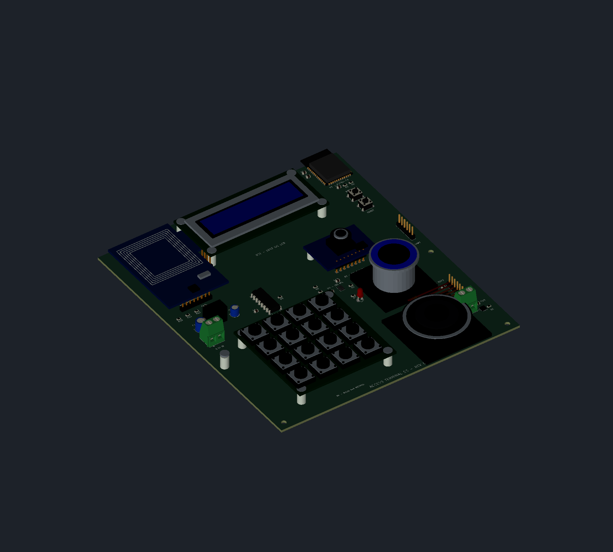

OPEN SOURCE · WINDOWS · v0.8.0 EARLY ACCESS
From an idea
to a board.
Draw the circuit. Shape the board. See it in 3D.
An electronics workspace for you—and the AI assistants you choose.
Symbols, footprints, 3D libraries and native backend included.
No separate KiCad installation required.

FROM THE WORKBENCH
Three projects.
A growing workspace.
Real local test projects, shown through their exported artifacts. Each one taught us something different about building electronics with Jenga.
DESIGN WITH INTENT
Your tools.
Your engineering judgment.
Work directly
Edit schematics, reusable symbols, footprints and boards. Review the physical assembly, then export native files and review artifacts.
Bring your assistant
Connect an MCP-capable assistant or use the CLI. Jenga exposes deterministic engineering operations; an AI service or subscription is not bundled.
AI connection guide ↗Keep your files open
Work with modern KiCad formats and project libraries. Inspect the results in the tools you already use.
Review before you build
Early-access CAD needs careful review. Run electrical and board checks, inspect component data and validate the finished design.
YOUR NEXT PROJECT
Give Jenga a place on your workbench.
Windows x64. Open source. Libraries included.